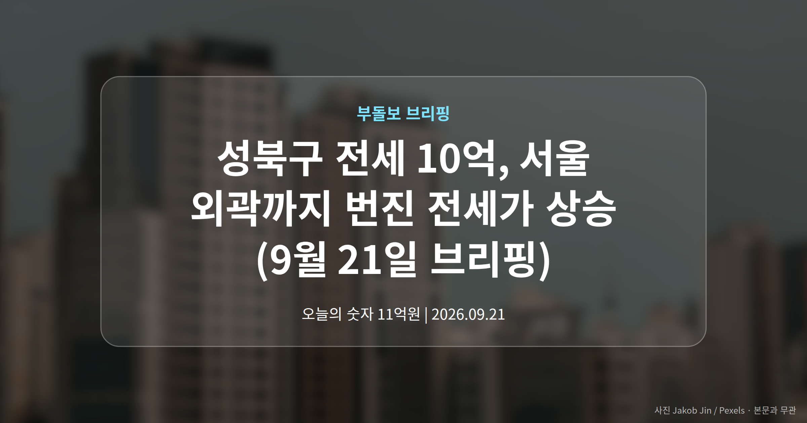
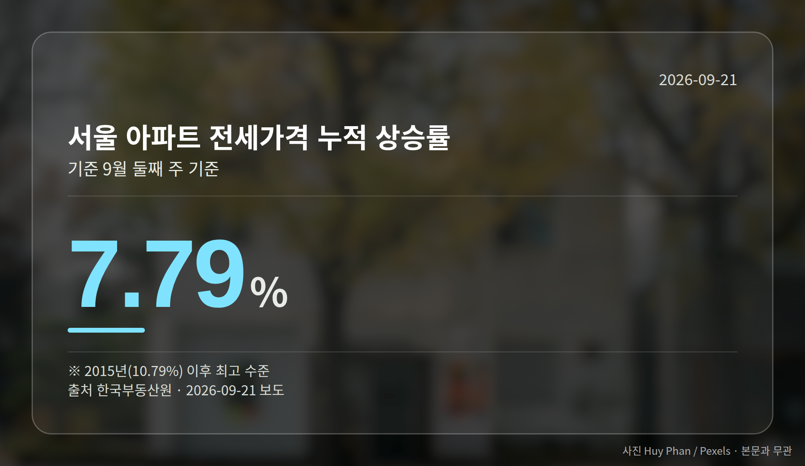
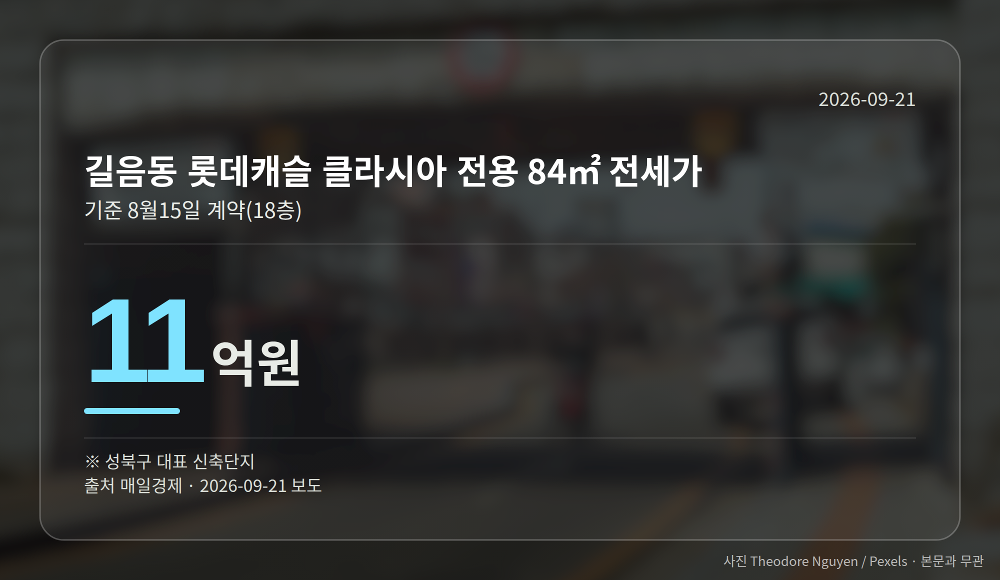

이 글은 2026년 9월 21일 기준으로 정리한 내용입니다.
성북구 전세 10억 시대가 현실이 됐습니다. 그동안 마포·용산·성동에 국한됐던 국민평형(전용 84㎡) 전세 10억원대가 성북·강북·노원까지 번졌습니다.
서울 아파트 전세가격 누적 상승률은 9월 둘째 주 기준 7.79%로, 2015년 이후 최고 수준입니다(한국부동산원 집계).

성북구 길음동 롯데캐슬 클라시아 전용 84㎡는 지난달 15일 18층 기준 11억원에 전세 계약됐습니다.
인근 래미안 길음 센터피스 전용 84㎡도 7월 11층이 10억5000만원에 계약됐고, 현재 23층 매물 호가가 같은 금액입니다.
이는 성동구 옥수동 e편한세상 옥수파크힐스 전용 84㎡가 8월 3일 10억5000만원(3층)에 계약된 것과 맞먹는 수준입니다.
주변 지역도 비슷합니다. 동대문구 청량리역 한양수자인 그라시엘은 지난해 11월 8억원대 초반이던 신규 계약가가 지난달 30일 53층 기준 10억원으로 올라섰습니다.
강북구 미아동 한화포레나미아 전용 84㎡ 전세 호가는 12억원으로, 6월 26일 거래가 9억5000만원보다 높습니다. 노원구 중계동 건영3차(1995년 준공)는 9월 11일 9억1000만원에 계약됐습니다.

한국부동산원 기준 올해 누적 상승률을 보면, 서울 평균을 웃돈 곳은 성북·노원·동대문구였습니다.
| 지역 | 2026년 누적 전세가격 상승률 |
|---|---|
| 성북구 | 12.84% |
| 노원구 | 12.25% |
| 동대문구 | 8.43% |
| 서울 평균 | 7.79% |
| 동남권(강남3구·강동구) | 6.03% |
강남3구와 강동구가 포함된 동남권이 오히려 평균을 밑돌았다는 점이 눈에 띕니다. 참고로 성북구는 매매가격 누적 상승률도 14.01%로 서울 자치구 중 1위였습니다.
앞서 본 서울 평균 상승률은 지난해 같은 기간(1.16%)의 4배를 넘고, 지난해 연간 상승률(3.77%)의 2배를 이미 넘어섰습니다. 2015년 연간 10.79% 이후 가장 높은 수준입니다.
매일경제는 신축 입주 물량 부족과 대출 규제로 고가 지역 대신 중저가 지역에 거래가 몰린 점을 배경으로 짚었습니다. 성북구 전세 10억이라는 숫자는 전세 부담이 서울 전역으로 번질 수 있다는 신호로 읽힙니다.
다만 전문가들의 토지거래허가제(일정 지역에서 집을 살 때 구청 허가를 받아야 하는 제도)·세제 관련 진단은 '안정이 쉽지 않다'는 요약 수준으로만 전해졌습니다.
여러분이 지금 살고 계신 동네의 국민평형 전세 시세는 1년 전과 얼마나 달라졌나요?
댓글로 알려 주시면 다음 글에 반영하겠습니다.